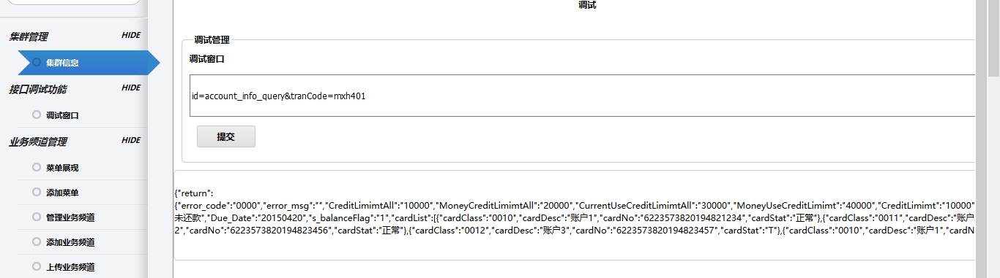

本章节主要讲解如何后端接口联调
接口联调主要是做什么的？在开发期间，接口联调需要保证程序的输入、返回和接口文档一致。在联调测试阶段，联调需要在前面之上保证数据、业务逻辑的正确性。
本章节分两种情况讲述如何进行接口联调
session_service:read_by_id("7c553e220d14e1afaa03548a6f0d4652ed7eaa7dbf6c0c1f73a434f5b36fa21d").
%%输入提前定义并且编写好的adapter、procedure、并且严格按照接口文档填写参数列表（公共参数参照前面章节配置）
ebank_adapter_utils:ebank_invoke_procedure({"pochost","ad",[]}).
校验simulator日志中上送参数是否正确
WARNING in app [app.py:60]:
params:{'{"RSP_HEAD":{"setp":"1"},"RSP_BODY":{"tranCode":"JH0001","EMP_SID":"ETAVHVFTDSJPCJBFJEEZJTBEJADOILEVFTFMBVDB","platform":[],"mobileNo":"18032178965","certNo":"13062719910927122X","certType":"0","httpHostInfo":"192.168.241.1","channel":"cs"}}': u''}
--------------------------------------------------------------------------------
--------------------------------------------------------------------------------
WARNING in app [app.py:64]:
注意，post参数中无法取得tranCode参数，请检查配置，simulator中按URL的tranCode-JH0001为准
--------------------------------------------------------------------------------
192.168.241.3 - - [06/Sep/2015 23:58:52] "POST /mobs/ewp.do HTTP/1.0" 200 -

id=entrance&tranCode=first_page&collection_id=ebankv2_root&type=all
点击提交
如果返回内容如下
{"message":"internal error"}
表示后台程序有问题，请根据后端日志，查找问题，并修改 如果返回内容为正常json，请格式化后查看内容是否与前后端接口文档内容一致，不一致请根据情况修改 cs或者erlang代码
真实数据调试的调试方法基本与上面一致，主要分为模拟登陆和不模拟登陆两种
注意：两种模式需要使用不同的配置 ebank.conf
%%是否启用模拟session
{login,true}. % true|false|con 代码模拟登陆|报文模拟登陆|完整流程
主要使用true和con两种方式